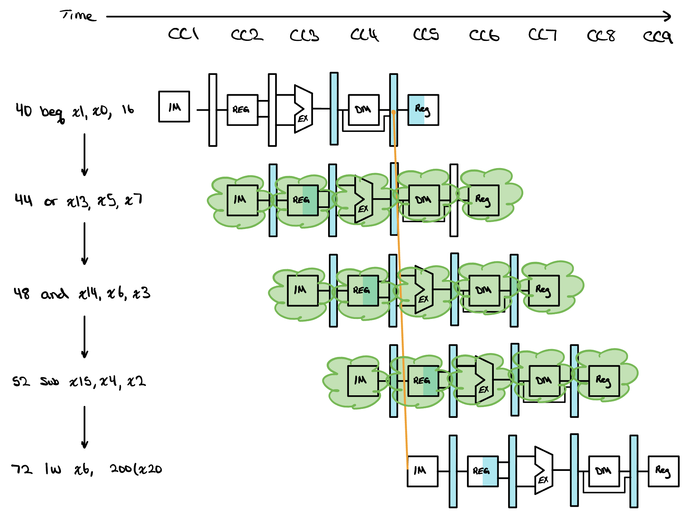
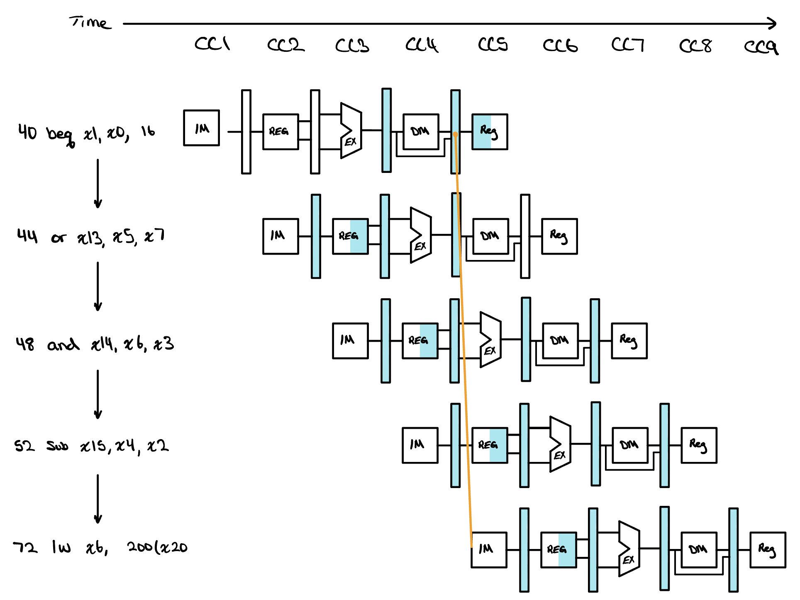
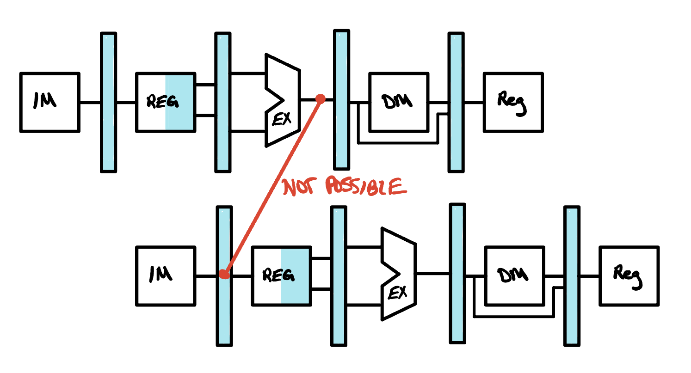

Control Hazards
A control hazard is what happens when the pipeline has to fetch an instruction before it knows which instruction that should be. A conditional branch is the whole problem, because the address of the next instruction depends on a comparison the machine has not made yet. The answer is not to wait for the answer but to guess, to make the guess cheap to be wrong about, to make the window in which we can be wrong as short as the hardware allows, and finally to let the guess learn from what the program has already done.

The Problem with Branches
Every instruction the pipeline has run so far has had an obvious successor. The instruction at the next address is the one that gets fetched, and Fetch can go on doing that a cycle at a time without ever asking a question. A conditional branch breaks that, because the instruction that follows it depends on a comparison the machine has not performed yet, and the pipeline needs an address a full three cycles before that comparison finishes.

By the time a branch has been decided, the pipeline has already fetched the instructions sitting behind it and begun decoding them. One answer is to stall until the outcome is known, which charges a fixed penalty against every branch in the program whether or not the branch does anything. A cheaper answer is to guess, and the simplest guess worth making is to assume the branch is not taken and keep fetching straight ahead as though nothing had happened.
If the conditional branch is taken, the instructions that are being fetched and decoded must be discarded, and execution will continue at the branch target instead. That is the case drawn in the chart at the top of this page, where the three instructions behind the beq are thrown away and the lw at the target address is fetched in their place. Nothing they did is allowed to reach the register file or memory, so discarding them is a matter of stopping their results rather than undoing them.
The trade is a good one rather than a free one. If conditional branches are untaken half the time, and if it costs little to discard the instructions we fetched down the wrong path, then this optimization halves the cost we would otherwise have paid by stalling on every single branch instruction. Half the branches now cost nothing at all, and only the taken half pays.
Further Optimizing Branches
When a branch condition turns out to be true, the number of instructions we have to discard is decided by one thing only, which is how wide the window is between the stage where the branch was fetched and the stage where its condition was evaluated. Every cycle inside that window is a cycle in which the pipeline fetched an instruction it had no business fetching. If we move the branch execution earlier in the pipeline, then fewer instructions have to be tossed and therefore fewer clock cycles are wasted, so we will move the branch execution unit out of Execution and into the Decode stage of the pipeline. The window closes from three instructions to one.
Making that change introduces further complications that we now have to resolve, because comparing two register values for a branch is still a comparison of results, and those results may belong to an instruction that is already in flight. The forwarding unit we built in the last lesson cannot help here, since it delivers operands to the ALU inputs in Execution and the comparison no longer happens there. Since we have moved the branch execution into Decode, we will need a new branch forwarding unit that delivers operands to the comparator instead. Just as before, a forwarded operand can come from either the EX/MEM or the MEM/WB pipeline register, and the same 2x1 style of selection decides which.

Since the branch comparison is now needed during Decode but the value it compares may not be produced until a later stage, a data hazard can occur that no amount of forwarding will fix, and the pipeline has to stall. Consider an ALU instruction sitting immediately before a branch, producing the very operand the conditional test wants to read. A stall is required, because the Execution stage of that ALU instruction happens after the Decode cycle of the branch, and the sketch beside this paragraph is what that looks like: the arrow the branch would need points backwards in time, which is the one thing a forwarding path can never do.
![Four copies of the pipeline datapath stacked one above the other. The load is on top, with a dot on the wire leaving its data memory into the MEM/WB register. Below it the branch is drawn twice, each time shaded green and labelled Stall, and a red line runs from that dot back and down to the IF/ID register in each of them, both labelled NOT POSSIBLE because they point backwards in time. The bottom copy is the branch after two stalls, and an orange line labelled POSSIBLE runs straight down from the same dot to its IF/ID register.](../../assets/pipelined-cpu/branch-forwarding-MEM.jpg)
If a load sits immediately before a branch and the branch reads what it loaded, two stalls are needed instead of one, since the loaded value does not appear until the end of the Memory cycle and the branch wants it during Decode.
The drawing beside this paragraph follows that case all the way through. The load is on top, and the branch behind it is drawn twice more, held still by a stall each time before it is allowed to decode. The first red line is the forward the branch would need if it were not stalled at all, and the second is the forward it would still need after a single stall. Both of them point backwards in time, and that is the whole reason one stall cannot close this particular gap.
Once the second stall has been inserted, the orange path is the one that works. The loaded word is written into the MEM/WB pipeline register at the end of the load's Memory cycle, and the branch now reads its operands in the cycle after that, so the branch forwarding unit can hand the value straight across. The price is two dead cycles on every load that feeds a branch directly, which is a strong reason for a compiler to schedule some independent instruction between the two whenever it can find one.
Putting It All Together
One piece of this is easy to leave out, and it is the piece that actually throws the wrong instructions away. Resolving the branch in Decode means exactly one instruction has been fetched behind it by the time we know the outcome, and that instruction is sitting in the IF/ID pipeline register. When the branch is taken we flush that register, which means forcing its contents to zero so that the instruction it held decodes as a nop and travels the rest of the pipeline writing nothing.
The other half of the job is holding the program counter. Whenever the pipeline stalls, whether for a load feeding the instruction behind it or for a branch still waiting on an operand, the PC must be held from writing for that cycle and the IF/ID register has to be held with it. If the counter were allowed to advance, the instruction the stall was protecting would be replaced by the next one before it had ever been used, and the cycle the stall bought would be spent on the wrong instruction. So a stall zeroes the control fields and freezes the PC to hold an instruction still, while a flush zeroes a whole fetched instruction to make it disappear, and the two modules below are the hardware that decides when each one fires.
Only one of the two ends up inside a module. Holding the pipeline still is a decision made by comparing register numbers, which is what a hazard unit does, while the flush is driven straight off the taken signal coming out of the comparator in Decode. They reach the same register from two different places, so keeping them apart is what stops one being read as the other.
module branch_forwarding_unit (
input wire [4:0] IFID_rs1,
input wire [4:0] IFID_rs2,
input wire [4:0] EXMEM_rd,
input wire [4:0] MEMWB_rd,
input wire EXMEM_regWrite,
input wire MEMWB_regWrite,
output reg [1:0] IFID_forwardA,
output reg [1:0] IFID_forwardB
);
always @(*) begin
// defaults: no forwarding, read from register file
IFID_forwardA = 2'b00;
IFID_forwardB = 2'b00;
// ---- IFID_forwardA ----
if (EXMEM_regWrite && (EXMEM_rd != 5'd0)
&& (EXMEM_rd == IFID_rs1))
IFID_forwardA = 2'b10; // from EX/MEM
else if (MEMWB_regWrite && (MEMWB_rd != 5'd0)
&& (MEMWB_rd == IFID_rs1))
IFID_forwardA = 2'b01; // from MEM/WB
// ---- IFID_forwardB ----
if (EXMEM_regWrite && (EXMEM_rd != 5'd0)
&& (EXMEM_rd == IFID_rs2))
IFID_forwardB = 2'b10;
else if (MEMWB_regWrite && (MEMWB_rd != 5'd0)
&& (MEMWB_rd == IFID_rs2))
IFID_forwardB = 2'b01;
end
endmodulePick a note to light the lines it is about.
module hazard_detection_unit (
input wire [4:0] IFID_rs1,
input wire [4:0] IFID_rs2,
input wire [4:0] IDEX_rd,
input wire [4:0] EXMEM_rd,
input wire IDEX_memRead,
input wire IDEX_regWrite,
input wire EXMEM_memRead,
input wire IFID_branch,
output reg IFID_pcWrite,
output reg IFID_write,
output reg IFID_stall
);
always @(*) begin
// defaults: pipeline advances normally
IFID_pcWrite = 1'b1;
IFID_write = 1'b1;
IFID_stall = 1'b0;
// load-use hazard: load in EX, its result
// needed by the instruction in ID
if (IDEX_memRead && (IDEX_rd != 5'd0)
&& ((IDEX_rd == IFID_rs1) ||
(IDEX_rd == IFID_rs2))) begin
IFID_pcWrite = 1'b0; // hold PC
IFID_write = 1'b0; // hold IF/ID
IFID_stall = 1'b1; // zero ID/EX control
end
// branch in ID needs an ALU result still in EX:
// one stall, then forwarding covers it
if (IFID_branch && IDEX_regWrite && (IDEX_rd != 5'd0)
&& ((IDEX_rd == IFID_rs1) ||
(IDEX_rd == IFID_rs2))) begin
IFID_pcWrite = 1'b0;
IFID_write = 1'b0;
IFID_stall = 1'b1;
end
// branch in ID needs a load still in MEM:
// this is the second of the two stalls
if (IFID_branch && EXMEM_memRead && (EXMEM_rd != 5'd0)
&& ((EXMEM_rd == IFID_rs1) ||
(EXMEM_rd == IFID_rs2))) begin
IFID_pcWrite = 1'b0;
IFID_write = 1'b0;
IFID_stall = 1'b1;
end
end
endmodulePick a note to light the lines it is about.
With both of those in place the datapath is finished, and it is worth seeing the whole of it at once. The comparator and its adder have moved up into Decode, the branch forwarding unit feeds them from the two pipeline registers downstream, the hazard detection unit holds the PC and the IF/ID register when an operand is not ready yet, and the taken signal runs back to flush the one instruction that was fetched behind a branch that turned out to be taken.
![The complete pipelined datapath. The five stages run left to right, separated by the IF/ID, ID/EX, EX/MEM and MEM/WB pipeline registers. In Decode a comparator and its own adder resolve the branch, fed by a branch forwarding unit that selects between the register file, the EX/MEM register and the MEM/WB register. A hazard detection unit reads the source and destination register numbers and drives the PC write enable, the IF/ID write enable and the control-zeroing path into ID/EX. The taken signal from Decode runs back to flush the IF/ID register, and the original forwarding unit still feeds the ALU inputs in Execution.](../../assets/pipelined-cpu/pipelined-cpu-architecture.jpg)
Dynamic Branch Prediction
Assuming that a branch is not taken is a fixed guess, and a fixed guess is only ever as good as the program it is guessing about. Loops are where it does worst. A loop closes with a branch that jumps backwards to the top, and that branch is taken on every single iteration except the final one, so a machine that always guesses not taken is wrong almost every time around. Depth makes this worse rather than better, because the number of instructions thrown away on a misprediction is set by how far apart the fetch and the resolution are, and that distance grows with every stage added.
The alternative is to let each branch's own past decide. Dynamic branch prediction keeps a record of how a branch behaved the last few times it ran and predicts that it will behave the same way again. The record lives in a branch prediction buffer, a small memory indexed by the low bits of the branch instruction's address and holding a couple of bits of history in each entry. Nothing in that memory has to be right for the processor to be right. It is a hint, checked against the real outcome when the branch resolves, and a wrong hint costs exactly the flush that a wrong fixed guess would have cost.

The simplest version of this stores a single bit per entry and predicts whatever the branch did last time. It beats a fixed guess and it still handles loops poorly, because it gets two predictions wrong for every pass through one rather than one. Picture a loop that runs nine times. The bit correctly predicts taken through the ninth iteration, then the loop exits and the prediction is wrong, which was unavoidable, and the bit flips to not taken. The next time the program reaches that loop the very first iteration is predicted not taken and is wrong again. A branch taken ninety percent of the time ends up predicted correctly only eighty percent of the time.
Making the predictor slow to change its mind is what fixes it. A 2-bit predictor holds four states rather than two, and a prediction has to be wrong twice in a row before it flips. The two states on the upper half of the diagram beside this paragraph both predict taken and the two on the lower half both predict not taken, with the outer states holding that opinion strongly and the inner ones holding it weakly. One surprising outcome moves the entry a single state toward the other opinion without yet changing what it predicts, and only a second consecutive surprise crosses the middle. The loop that cost a 1-bit predictor two mispredictions now costs one, since the exit knocks the entry from strongly taken to weakly taken and the next pass still predicts taken correctly.
Real processors carry this much further along the same line. A correlating predictor indexes its table with the outcomes of the last few branches as well as with the branch address, because branches in real code are rarely independent and one condition being true often implies another. A tournament predictor runs several schemes at once and keeps a running score of which one has been serving each branch better, then follows whichever is currently winning. The prediction hardware in a modern core is large, and it is large for the reason this whole lesson has been building towards, which is that every stage of pipeline depth it protects is a stage that would otherwise be paid for on every wrong guess.
Check Yourself
The hazard unit's load-use test qualifies on memRead, but its branch test qualifies on regWrite. Why is the branch's test the broader of the two?